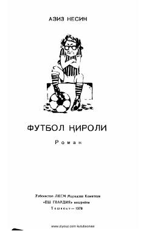

FQFutbol olami va ijtimoiy odatlar haqidagi qiziqarli va hajviy turk romani.
Mashhur turk yozuvchisi Aziz Nesinning ushbu hajviy romanida futbol olami va undagi ijtimoiy odatlar satira ostiga olinadi. Asar sevgi va sportga bo'lgan qiziqishlari tufayli futbol yulduziga aylanishga majbur bo'lgan yigit hamda boy oila vakillari atrofidagi qiziqarli voqealar haqida hikoya qiladi.